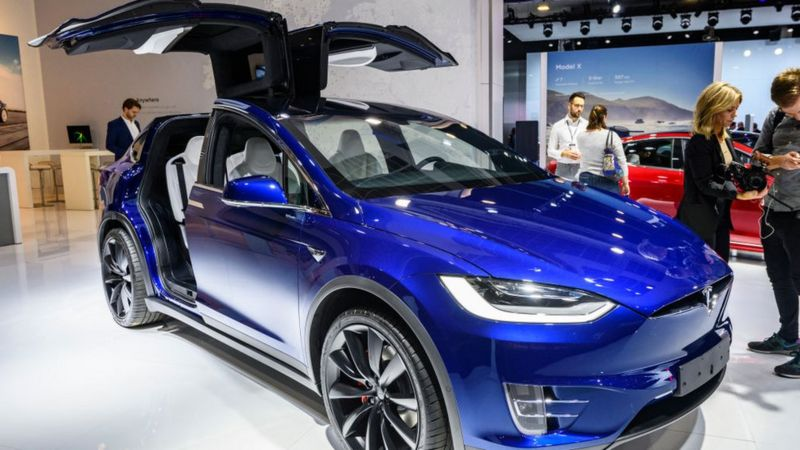
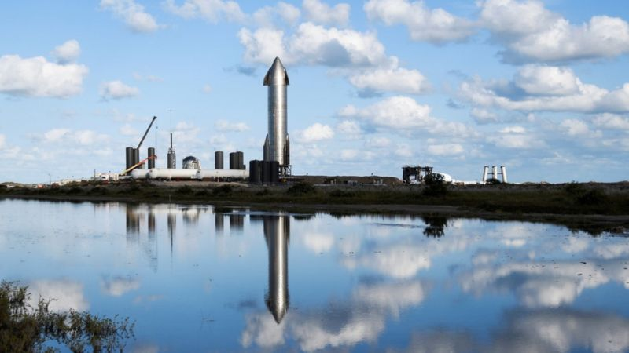
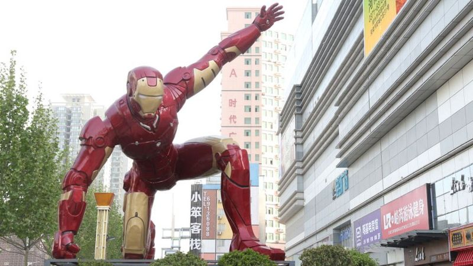
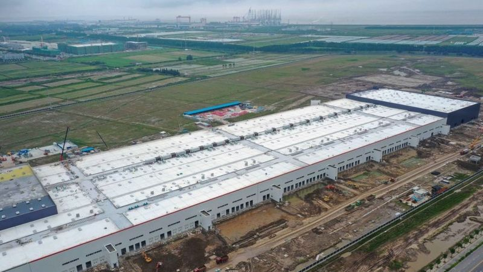

Дело не в деньгах
Это ключевой пункт во взглядах Маска на ведение бизнеса. Во время интервью в 2014 году он признался Би-би-си, что не знает размера своего состояния. "Это же не мешок с деньгами, - говорил он. - Просто у меня есть определенные доли в Tesla, SpaceX, SolarCity, а рынок оценивает их стоимость".
Следуйте за тем, что вас увлекает
 Та самая база на Марсе во многом объясняет, что именно Маск считает ключом к успеху. "Хочется, чтобы в будущем все было лучше, - сказал он корреспонденту Би-би-си. - Хочется, чтобы появились новые и захватывающие вещи, благодаря которым наша жизнь улучшится".
Возьмите, к примеру, SpaceX. Маск рассказал нам, что создал эту компанию, поскольку его расстраивала недостаточная масштабность американской космической программы.
Не бойтесь ставить масштабные задачи
 Одна из самых необычных особенностей компаний Маска - это то, насколько дерзкие задачи они решают.
Он хочет совершить революцию в автомобильной индустрии, колонизировать Марс, построить суперскоростные поезда, которые будут передвигаться по вакуумным тоннелям, интегрировать искусственный интеллект с мозгом человека и перевернуть индустрию солнечной энергии и по производству батарей.
id="3"Не бойтесь рисковать
 Здесь все очевидно.
Чтобы добиться успеха, нужно быть готовым к риску, но к Маску это относится даже в большей степени, чем к большинству его коллег.
К 2002 году он продал доли в своих первых двух начинаниях - интернет-путеводителю по городам Zip2 и компании PayPal, осуществляющей онлайн-платежи. Тогда ему только исполнилось 30 лет, а на его счетах было почти 200 млн долларов.